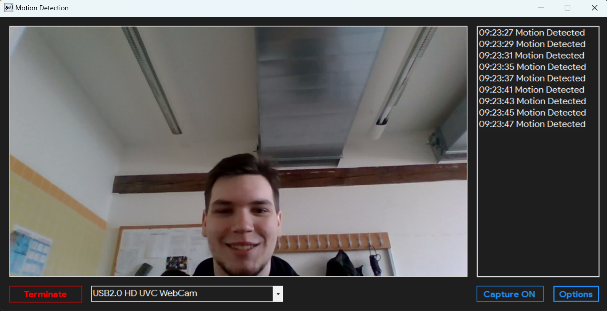
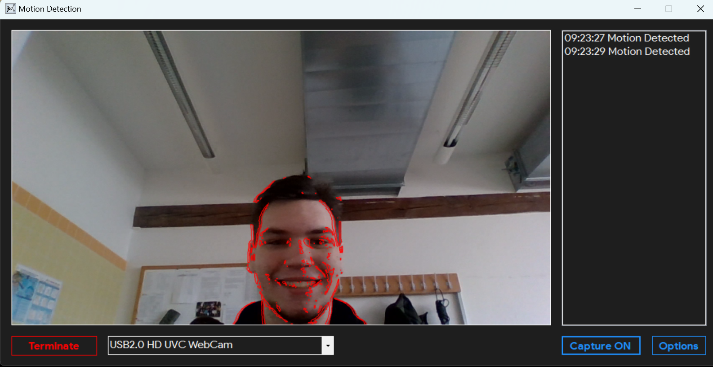
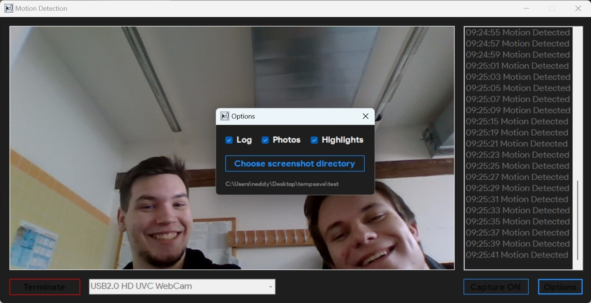
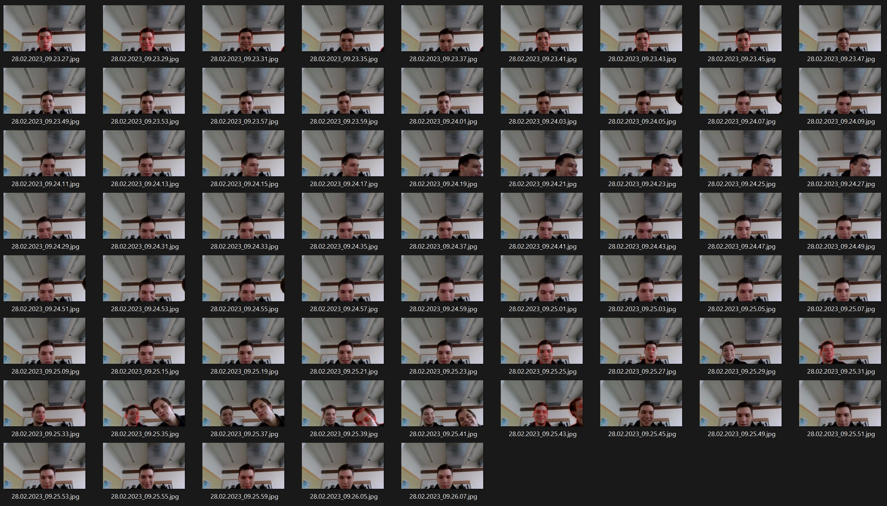

It is basically an advanced camera app with an additional ability to highlight movement on a video feed. Additionally, any movement can be captured and saved as a picture.
Camera view without movement highlights
Camera view with movement highlights
Options
Saved photos
